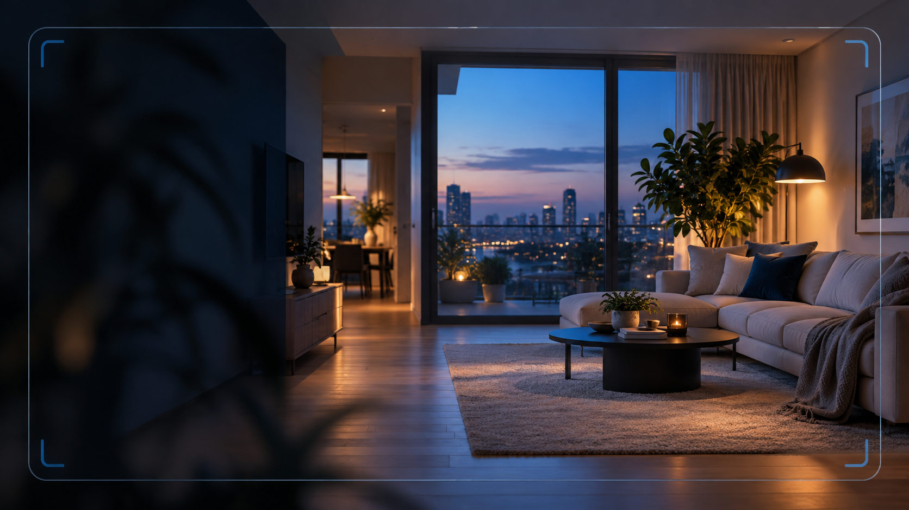
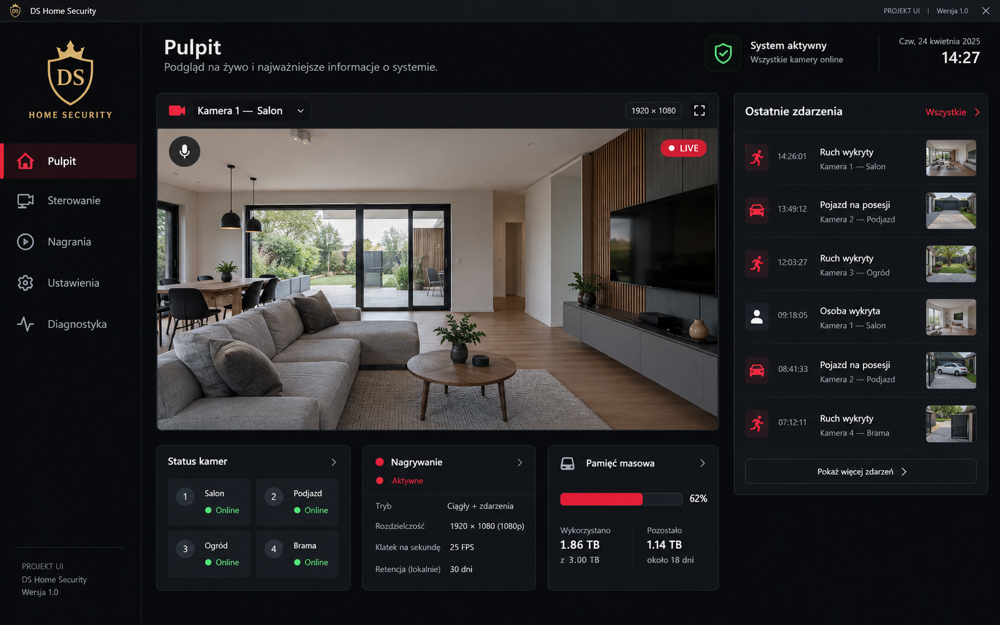
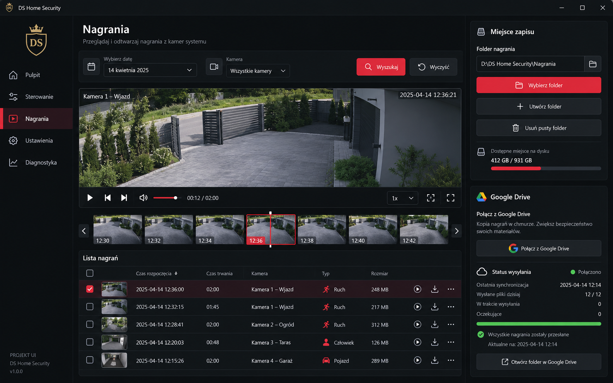
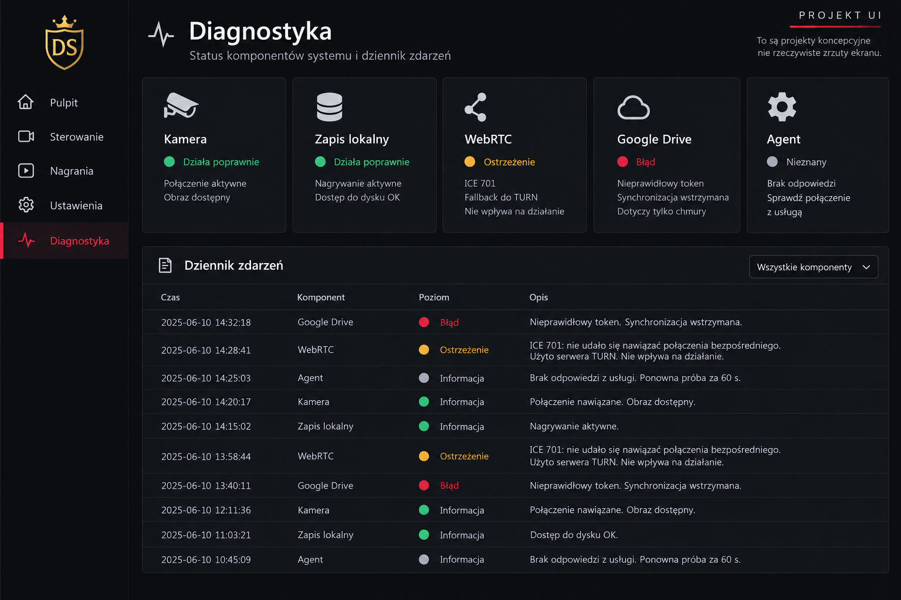
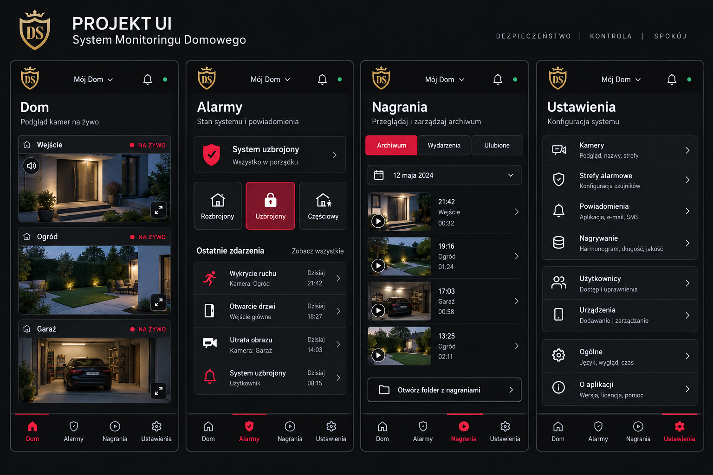
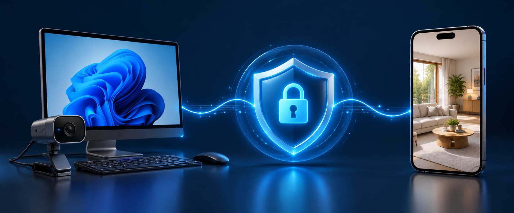

Sprawdź to,
co dzieje się teraz.
Podgląd kamery, odsłuch i kontrola kadru. Pełny ekran, cyfrowe przybliżenie i ustawienia dopasowania obrazu są pod ręką.
Jak rozumieć stan kameryKomputer z kamerą→Twój panel
HOME SECURITY · MONITORING DLA TWOJEGO DOMU
Zobacz obraz z domowej kamery na telefonie, wróć do nagrań i sprawdź stan połączenia. HOME SECURITY łączy komputer Windows z przejrzystym panelem internetowym.
Wydanie rozwojowe: to nie jest gotowy system alarmowy. Sprawdź możliwości i ograniczenia. Masz pytanie o ofertę?

JEDEN SYSTEM. PRZEJRZYSTY OBRAZ SYTUACJI.
Najważniejsze obszary systemu są oddzielone. To przykład układu panelu — nie transmisja z kamery i nie rzeczywiste dane pomiarowe.
PANEL KONTROLI
PROJEKT INTERFEJSU · PLANSZE KONCEPCYJNE
Cztery projekty ekranów Windows i telefonu. To wizualizacje UI z etapu 193, a nie zrzuty działającej aplikacji 217. Wybrane elementy mogą nie być dostępne w obecnej wersji.




Plansze pokazują kierunek projektowy, nie dowodzą obsługi wielu kamer, detekcji osób, czujników ani niezależnego nagrywania. Zakres działających funkcji i ograniczeń opisujemy poniżej.

ZOBACZ, JAK TO DZIAŁA
HOME SECURITY łączy program na komputerze Windows z panelem w przeglądarce telefonu. Dzięki temu wiesz, gdzie powstaje obraz, gdzie zapisują się nagrania i jakie warunki musi spełniać połączenie.
Uruchamiasz program Windows i wybierasz kamerę. To komputer jest nadajnikiem, a nie telefon.
Logujesz się na konto, odblokowujesz dostęp PIN-em i sprawdzasz dostępność podglądu.
Archiwum i diagnostyka pomagają odróżnić działającą kamerę od rzeczywiście zapisanego pliku.
MNIEJ SZUKANIA. WIĘCEJ KONTROLI.
Podgląd, nagrania i ustawienia mają osobne sekcje. Nie musisz przekopywać się przez jeden przeładowany ekran.
Podgląd kamery, odsłuch i kontrola kadru. Pełny ekran, cyfrowe przybliżenie i ustawienia dopasowania obrazu są pod ręką.
Jak rozumieć stan kameryArchiwum DVR, wybór dnia i odtwarzanie. Miejsce zapisu wybierasz na komputerze nadającym — z jego zgodą na dostęp do folderu.
Poznaj zasady zapisu ↗Stan kamery, nagrywania, folderu, WebRTC i chmury jest rozdzielony. Sam napis „na żywo” nie oznacza, że plik został już zapisany.
Sprawdź diagnostykę ↗Logowanie do konta i odblokowanie panelu to oddzielne kroki. Publiczna strona nie wyświetla obrazu z Twojej kamery.
Zobacz pierwsze uruchomienie ↗CO MOŻESZ ZROBIĆ
Trzy codzienne sytuacje, w których liczy się prosta obsługa. Poniższe miniatury są schematami, nie zrzutami ekranu ani rzeczywistymi pomiarami.
Otwierasz panel na telefonie i widzisz obraz udostępniany przez komputer. Dostęp zależy od działającego nadajnika i połączenia.
Jak uruchomić podgląd →Przeglądasz archiwum według dostępnych dni i odtwarzasz materiał. Zapisywany plik musi być potwierdzony przez komputer.
Gdzie powstaje nagranie →Odczytujesz osobno stan kamery, połączenia i folderu. Sam podgląd nie daje jeszcze pewności, że nagranie zostało zapisane.
Co oznaczają stany systemu →PROSTY PODZIAŁ RÓL
Windows obsługuje źródło kamery i miejsce zapisu. Telefon służy do podglądu, archiwum oraz dostępnych ustawień właściciela.
Przeczytaj instrukcję startu →Zainstaluj program Windows, podłącz kamerę i sprawdź jej dostępność w ustawieniach urządzeń.
Wejdź na swoje konto, odblokuj panel PIN-em i zatwierdź lokalizację nagrań.
Otwórz panel internetowy, zaloguj się i sprawdź obraz. Nadajnik musi pozostać uruchomiony.
PRAKTYCZNIE, BEZ ZGADYWANIA
Sprawdź cztery rzeczy, od których zależy pierwsza konfiguracja. Ten przewodnik nie łączy się z kamerą i nie sprawdza automatycznie Twoich urządzeń.
Zaznacz przygotowane elementy. To lokalna lista kontrolna, bez zapisywania Twoich odpowiedzi.
ZANIM ZACZNIESZ
Parametry obrazu zależą od sprzętu, ustawień i połączenia. Faktyczne wartości sprawdzisz w diagnostyce, a nie w marketingowej obietnicy.
PRZEJRZYSTOŚĆ TO PODSTAWA
Komputer Windows obsługuje kamerę i lokalizację zapisu. Telefon jest interfejsem do podglądu i dostępnych funkcji właściciela. To ważne rozróżnienie: działający obraz nie jest dowodem ukończonego zapisu.
GDZIE CO SIĘ DZIEJE · SCHEMAT
To schemat architektury, nie gwarancja dostępności połączenia ani zachowania nagrań.
ROZWIJAMY OTWARCIE
HOME SECURITY jest rozwijanym systemem. Przed użyciem jako jedynego zabezpieczenia przetestuj własny zestaw: kamerę, zapis, odtwarzanie i połączenie z telefonu.
Podgląd, konto i PIN, wybór urządzeń, archiwum, ustawienia i rozdzielona diagnostyka. Każdą instalację trzeba skonfigurować i sprawdzić.
Agent Windows i nowa ścieżka chmurowa są rozwijane. Obecnego nagrywania nie należy traktować jako niezależnego od otwartego panelu nadajnika.
Rozbudowana obsługa wielu kamer oraz aplikacje sklepowe Android/iOS nie są jeszcze gotowymi elementami oferty. Nie podajemy niepotwierdzonych dat.
DWA SPOSOBY, BY ZACZĄĆ
Bez obiecywania funkcji, które jeszcze powstają. Sprawdź system albo porozmawiaj o zastosowaniu go u siebie.
To wydanie rozwojowe. Nie udostępniamy obecnie publicznego cennika ani płatności na tej stronie. Rejestracja nie jest zakupem. Warunki ewentualnego udostępnienia komercyjnego wymagają indywidualnego ustalenia przed jakimkolwiek zobowiązaniem.
Załóż konto, potwierdź adres e-mail i skonfiguruj PIN. Do podglądu potrzebny jest uruchomiony nadajnik Windows.
Przejdź do rejestracji →Masz pytania o sprzęt, wdrożenie lub przyszłą ofertę? Wyślij zapytanie. Warunki i dostępność uzgodnimy indywidualnie.
Zapytaj o ofertę ↗BLOG I CENTRUM WIEDZY
Konto, PIN, kamera i folder. Kolejność, która pomaga uniknąć niepotrzebnych problemów.
Czytaj poradnik ↗NAGRANIA I KOPIEDlaczego aktywna kamera, zapisany plik i kopia w chmurze to nie to samo.
Czytaj poradnik ↗POMOC TECHNICZNAJak czytać stan kamery, harmonogramu, folderu, połączenia i chmury.
Czytaj poradnik ↗ASYSTENT HOME SECURITY · AI
Asystent pomaga zrozumieć funkcje, wymagania i instrukcje. Nie ogląda Twojej kamery, nie obsługuje konta i może się pomylić. Nie podawaj mu haseł, kodów PIN ani prywatnych nagrań.
„Jak rozpocząć podgląd na telefonie?”
„Gdzie zapisują się moje nagrania?”
„Jak sprawdzić stan połączenia?”
Odpowiedzi nie zastępują diagnostyki urządzenia.To dwa interfejsy jednego projektu: instalowany program Windows oraz panel internetowy. Komputer z kamerą pełni rolę nadajnika. Telefon nie zastępuje komputera nagrywającego.
Na telefonach dostępny jest panel w przeglądarce/PWA. Nie ma jeszcze opublikowanych aplikacji w Google Play ani App Store. Zachowanie obrazu, dźwięku i pracy w tle trzeba sprawdzić na swoim urządzeniu.
W obecnym wydaniu nie traktuj zamknięcia panelu nadajnika jako bezpiecznej pracy rejestratora w tle. Niezależny silnik agenta jest w integracji. Do tego czasu pozostaw nadajnik uruchomiony i sprawdzaj potwierdzenia zapisu.
Nie. Zapis lokalny i kopia do Drive to oddzielne ścieżki. Chmura wymaga poprawnej autoryzacji i konfiguracji. Błąd tokenu oznacza problem z kopią chmurową, a nie automatycznie z PIN-em lub kamerą.
Lokalizację wybierasz na komputerze nadającym. Dopóki folder i zapis pliku nie są potwierdzone, nie zakładaj, że materiał znajduje się w tym folderze. Więcej wyjaśnia poradnik o zapisie lokalnym.
Nie mamy jeszcze opublikowanego cennika ani możliwości zakupu na tej stronie. Samo założenie konta nie tworzy zamówienia. Jeśli interesują Cię warunki udostępnienia i przyszła oferta, napisz przez formularz.
Nie. Rejestracja otwiera konfigurację konta i panelu; sama w sobie nie jest zamówieniem ani płatnością. Publiczna strona nie ma jeszcze koszyka i cennika. W sprawie oferty, dostępności i warunków napisz przez formularz kontaktowy.
Nie. Część informacyjna jest oddzielona od dostępu do panelu. Korzystanie z własnego panelu wymaga przejścia odpowiedniej ścieżki logowania i PIN-u. Nie udostępniaj haseł, kodów ani prywatnych linków podglądu.
POROZMAWIAJMY O TWOJEJ INSTALACJI
Pomoc techniczna, konfiguracja albo pytania o rozwój produktu. Opisz urządzenie i to, co chcesz osiągnąć — bez wysyłania haseł i PIN-u.
HOME SECURITY
POTWIERDŹ KONTO
Wysłaliśmy wiadomość potwierdzającą. Otwórz bezpieczny link w wiadomości albo przepisz kod weryfikacyjny, jeśli jest podany.
Potwierdź konto w Google. Dostęp do panelu nadal wymaga PIN-u.
HOME SECURITY
COMMAND CENTER · SECURE CHANNEL
Sprawdzam bezpieczne połączenie…
Dostęp do kamery i nagrań tylko z PIN-em.
PIN jest wymagany po każdym ponownym uruchomieniu aplikacji.
Wybierz tryb pracy kamery
Aktualny stan i ustawienia kamery
Gotowe do sterowania